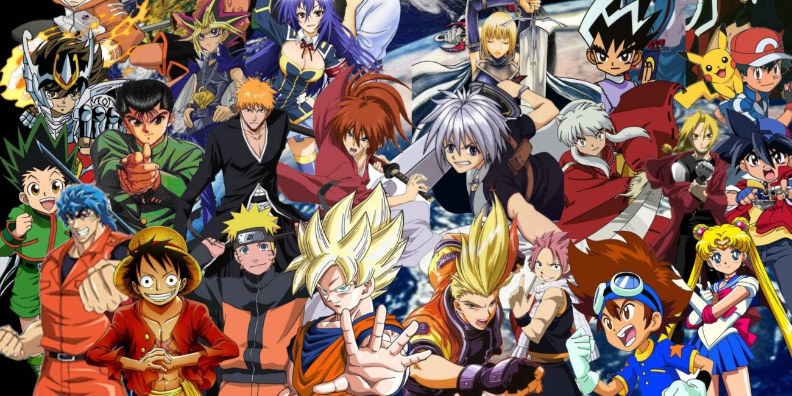

O texto a seguir foi pesquisado para fins educacionais:
Os animes fazem parte da cultura japonesa e vêm conquistando o mundo com suas histórias cativantes, personagens marcantes e trilhas sonoras incríveis. Desde títulos clássicos até produções modernas, o universo dos animes oferece uma grande variedade de gêneros para todos os gostos e idades. É comum ver fãs de diferentes idades se emocionando com cada episódio e se conectando com os personagens.
Entre os animes mais populares estão Naruto, Dragon Ball, One Piece, Attack on Titan, Demon Slayer e muitos outros. Cada um apresenta um estilo de arte único e narrativas envolventes que prendem a atenção do público desde o primeiro episódio. Esses animes também inspiram filmes, jogos, livros e produtos colecionáveis que movimentam uma indústria bilionária.
Os estúdios japoneses são mundialmente reconhecidos pela qualidade de suas animações. Produções como as do Studio Ghibli são consideradas obras-primas do cinema, com mensagens profundas e temas universais que emocionam pessoas de todas as idades. Esses filmes e séries trazem reflexões sobre amizade, superação, meio ambiente e outros assuntos importantes.
Além da animação em si, os animes influenciam a moda, a música, os jogos e até a gastronomia. Muitas lojas, convenções e festivais no Brasil e no mundo inteiro são dedicados a esse universo, reunindo fãs apaixonados e criativos. O cosplay, por exemplo, é uma prática muito comum entre os fãs, que se vestem como seus personagens favoritos.
A presença dos animes nas plataformas de streaming também contribuiu muito para sua popularidade. Hoje, é possível assistir episódios legendados ou dublados com apenas alguns cliques, tornando o acesso ao conteúdo japonês muito mais fácil. Além disso, novas produções são lançadas a cada temporada, oferecendo sempre algo inédito para assistir.
Seja pelo visual colorido, pela emoção das batalhas ou pelas mensagens inspiradoras, os animes continuam encantando novas gerações e mostrando que a animação pode ser muito mais do que apenas entretenimento — pode ser uma forma de arte. O impacto dos animes na cultura global é inegável e só tende a crescer com o tempo.